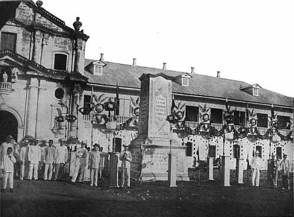
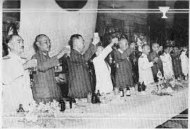
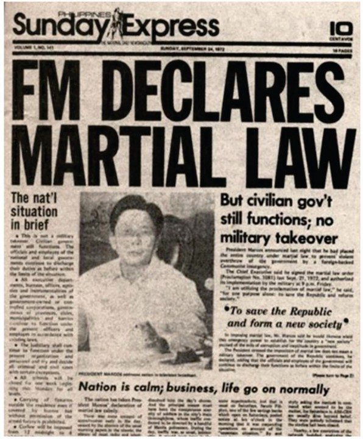

The Evolution of the Philippine Constitution and its Challenges: The Philippine Narrative
Introduction
The Constitution of the Philippines stands as the fundamental law that governs the nation, serving as the bedrock of its legal and political system.
Throughout its rich history, the Philippines has experienced various eras that have shaped the development and amendments of its constitution.
The history of the Philippine Constitution is a compelling narrative marked by a continuous quest for national identity, autonomy, and democratic governance.
This article delves into the issues surrounding the Philippine Constitution throughout history up until the present day, aiming to unravel the complexities, challenges, and the nation's journey toward constitutional maturity.
The Spanish Era (1565-1898)

The Encomienda System:
Upon the arrival of the Spanish in 1565, the encomienda system was established. This system granted conquistadors the right to extract forced labor from indigenous communities in exchange for protection and religious instruction. While intended to promote order, it often led to abuses and exploitation.
Laws of the Indies:
The Laws of the Indies, issued by Spain in the 16th century, regulated colonial life, governance, and the treatment of indigenous peoples. These laws influenced the establishment of local governments, emphasizing the role of Spanish authorities. However, their impact varied across the archipelago due to geographical and cultural differences.
Grito de Balintawak:
In the late 19th century, the desire for independence gained momentum. The Grito de Balintawak in 1896 marked the beginning of the Philippine Revolution against Spanish rule. While this movement did not immediately result in constitutional changes, it laid the groundwork for the aspirations of self-governance.
Malolos Constitution (1899):
Though the Malolos Constitution was drafted after the Spanish-American War and not during the Spanish Era, its significance is tied to the aspirations that emerged during the latter part of Spanish rule. This document, promulgated during the short-lived First Philippine Republic, represented the Filipinos' first attempt to establish a constitutional government. Unfortunately, it faced challenges with the onset of the Philippine-American War.
Key features of the 1899 Malolos Constitution include:
Title: The official title of the constitution was "Constitucion Politica de la Republica Filipina" (Political Constitution of the Philippine Republic).
Form of Government: The Malolos Constitution established the First Philippine Republic as a democratic republic with a presidential form of government.
Executive Branch: The President served as both the head of state and head of government. Emilio Aguinaldo was the first President under this constitution.
Legislative Branch The constitution provided for a bicameral legislature consisting of a lower house (Representatives) and an upper house (Senators).
Judicial Branch: The judiciary was independent, with the Supreme Court as the highest tribunal.
Bill of Rights: The Malolos Constitution included a Bill of Rights, guaranteeing various civil liberties and protections to the citizens of the republic.
Official Language: The constitution specified that the official language was Spanish.
It's important to note that the First Philippine Republic faced challenges, it's important to note that the Malolos Constitution had a relatively short-lived effect due to the Philippine-American War (1899-1902), which led to the establishment of American colonial rule in the Philippines. The United States did not recognize the First Philippine Republic, and the Malolos Constitution eventually became obsolete.
Impact on Constitutional Development:
The Spanish Era left a complex legacy on the Philippine legal system. While it introduced foundational legal principles, it also entrenched hierarchical structures that limited local representation. The struggles and aspirations for self-governance during this era set the stage for subsequent constitutional developments, ultimately influencing the trajectory of the nation's constitutional history.
The Japanese Era (1942-1945)

Generals Emilio Aguinaldo and Artemio Ricarte proudly raised the flag, marking its public display for the first time since April 1942, when the Japanese had banned its hoisting. Bishop Guerrero offered a prayer, and Laurel delivered an "Inaugural Address," accompanied by a 21-gun salute and approximately 5 minutes of ringing church bells (Maria, 2001).
The Japanese-sponsored Philippine Republic was established, led by Jose P. Laurel, and a new constitution was promulgated in 1943. After the inauguration, later on the same day, the Laurel administration signed the Japan-Philippine Pact of Alliance. This pact outlined provisions for political, economic, and military cooperation between Japan and the Philippines (Maria, 2001).
The Japanese occupation of the Philippines during World War II started a period of profound challenges for the nation's constitutional framework. Under Japanese rule, the 1935 Constitution, which had been established during the American colonial era, was nullified. This means this constitutional framework had to start on a blank slate to reestablish it's ruling under Jose P. Laurel.
One of the central issues during this era was the legitimacy of the Japanese-imposed constitution. While it allegedly provided for the establishment of a republic government, the circumstances under which it was promulgated raised questions about its authenticity and the extent to which it truly represented the will of the Filipino people. The imposition of Japanese authority, censorship, and restrictions on civil liberties cast a shadow over the constitution.
The Japanese-era Constitution faced challenges in reconciling national identity with the imposed foreign influence. It also attempted to blend Filipino culture with Japanese ideals, but the Filipino populace refused to accept these ideals and rebelled against the idea. The chaotic situations brought by protests during those times raised questions about the constitution's ability to genuinely represent the aspirations of the Filipino people.
The Japanese era in Philippine constitutional history was marked by the imposed bias to the Japanese influence on the constitution and the struggle to reconcile national identity amidst the setting during the wartime upheaval.
Japanese Occupation:
During World War II, the Philippines fell under Japanese occupation from 1942 to 1945. This period brought about significant challenges and changes to the existing governance structures. The Japanese forces established a puppet government, the Second Philippine Republic, headed by President Jose P. Laurel. The occupation had a profound impact on the socio-political landscape, affecting the trajectory of constitutional development.
Impact on Constitutional Development:
The Japanese Occupation disrupted the constitutional continuity of the Philippines, as the puppet government operated under the auspices of the Japanese Imperial forces. The experience of occupation and collaboration with Japanese authorities influenced subsequent constitutional considerations, reflecting the resilience and adaptability of the Filipino people in the face of external challenges.
The Post-War Era to the Present (1946-1987)-(Present)
The liberation of Manila on February 3, 1945, not only marked the end of Japanese censorship but also signaled the commencement of the post-war era, spanning from 1946 until the pre-martial law period. In essence, press freedom was reinstated during this post-war period. However, it was characterized by a "marriage of convenience" between the press, large business enterprises, and political groups, leading to the continued dominance of major newspapers in the field. This ownership structure resulted in the press predominantly serving the interests of its publishers. Consequently, it is evident that the social impact of the press was substantial during this period, particularly as media monopolies began to take root. (Lopez, 2010).
The post-war era in the Philippines was marked by reconstruction, recovery, and a renewed commitment to democratic principles. The restoration of the 1935 Constitution in 1946 symbolized a return to familiar constitutional grounds. One significant issue was its elitist character, reflecting the socio-political landscape dominated by traditional political elites.
The declaration of Martial Law in 1972 by then-President Ferdinand Marcos marked another critical juncture in Philippine constitutional history. This move shifted the balance of power, leading to issues of authoritarian rule and human rights violations.
The present era in Philippine constitutional history is characterized by the 1987 Constitution, a document crafted in response to the excesses of martial law. One of the contemporary issues is the call for constitutional reforms. The 1987 Constitution, while instrumental in restoring democratic norms, has faced criticisms for certain provisions that some argue hinder economic progress. Debates around federalism, economic provisions, and political structures have sparked discussions on the need for constitutional amendments.
Another challenge is the evolving landscape of technology and communication, which raises questions about the adaptability of constitutional provisions to the digital age. Issues related to data privacy, cybercrime, and freedom of expression in the digital realm demand careful constitutional consideration.
Moreover, the present era struggles with persistent issues of political dynasties, unequal distribution of wealth, and a sometimes-flawed electoral system. These are evidences that show the flaws in our constitutional framework which aims to address historical inequalities and to ensure broad-based democratic participation
The 1935 Constitution:
The Commonwealth era produced the 1935 Constitution, which served as the foundational law upon gaining independence in 1946. This document embodied democratic ideals and principles, establishing the structure of the government and protecting fundamental rights.

Martial Law and the 1973 Constitution:
The declaration of Martial Law in 1972 by then-President Ferdinand Marcos led to the suspension of the 1935 Constitution. In its place, the 1973 Constitution was promulgated, granting extensive powers to the executive. This era highlighted the susceptibility of the Philippine Constitution to political changes.
The 1987 Constitution:
The People Power Revolution in 1986 paved the way for a new constitution in 1987. This document aimed to address the abuses of the past and establish safeguards against the concentration of power. It remains the current constitution, providing a framework for democratic governance and the protection of human rights.
Conclusion
The journey of the Philippine Constitution unfolds through three pivotal eras — the Spanish Era, the Japanese Occupation, and the Post-War Era to the Present. The Philippine Constitution, molded by the historical struggles against colonial powers and shaped by the resilience of its people, stands today as a testament to the nation's journey toward self-determination. As the Philippines continues to evolve, the constitutional framework remains a dynamic reflection of its collective aspirations, serving as a guide for governance and a safeguard for the rights and freedoms of its citizens. The rich tapestry of these eras continues to influence the ongoing narrative of Philippine constitutional history, reminding us of the enduring spirit that propels the nation forward.